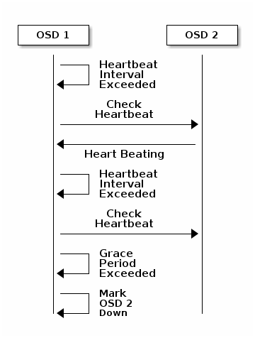
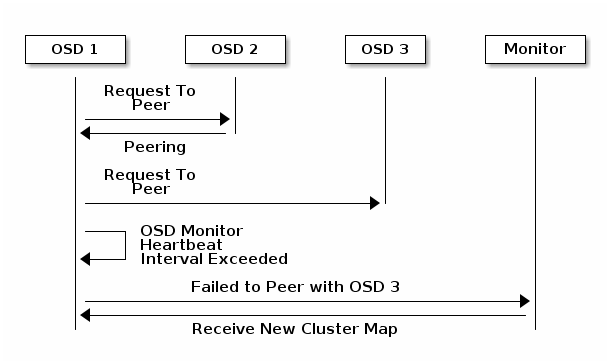
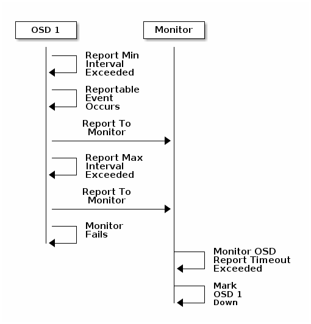

监视器与 OSD 交互的配置¶
（心跳配置）
完成基本配置后就可以部署、运行 Ceph 了。执行 ceph health 或 ceph -s 命令时，监视器会报告 Ceph 存储集群的当前状态。监视器通过让各 OSD 自己报告、并接收 OSD 关于邻居状态的报告来掌握集群动态。如果监视器没收到报告，或者它只收到集群的变更报告，那它就要更新集群运行图。
关于监视器与 OSD 的交互 Ceph 提供了合理的默认值，然而你可以覆盖它们。下面几段从集群监控角度描述了 Ceph 监视器与 OSD 如何交互。
OSD 验证心跳¶
各 OSD 每 6 秒会与其他 OSD 进行心跳检查，用 [osd] 下的 osd heartbeat interval 可更改此间隔、或运行时更改。如果一个 OSD 20 秒都没有心跳，集群就认为它 down 了，用 [osd] 下的 osd heartbeat grace 可更改宽限期、或者运行时更改。

OSD 报告死亡 OSD¶
默认情况下，一个 OSD 必须向监视器报告三次另一个 OSD down 的消息，监视器才会认为那个被报告的 OSD down 了；配置文件里 [mon] 段下的 mon osd min down reports 选项（ v0.62 之前是 osd min down reports ）可更改这个最少 osd down 消息次数，或者运行时设置。默认情况下，只要有一个 OSD 报告另一个 OSD 挂的消息即可，配置文件里 [mon] 段下的 mon osd min down reporters 可用来更改必需 OSD 数（ v0.62 之前的 osd min down reporters ），或者运行时更改。

OSD 报告互联失败¶
如果一 OSD 守护进程不能和配置文件中定义的任何 OSD 建立连接，它会每 30 秒向监视器索要一次最新集群运行图，你可以在 [osd] 下设置 osd mon heartbeat interval 来更改这个心跳间隔，或者运行时更改。

OSD 报告自己的状态¶
如果一 OSD 在 mon osd report timeout 时间内没向监视器报告过，监视器就认为它 down 了。在 OSD 守护进程会向监视器报告某些事件，如某次操作失败、归置组状态变更、 up_thru 变更、或它将在 5 秒内启动。你可以设置 [osd] 下的 osd mon report interval min 来更改最小报告间隔，或在运行时更改。 OSD 守护进程每 120 秒会向监视器报告其状态，不论是否有值得报告的事件。在 [osd] 段下设置 osd mon report interval max 可更改OSD报告间隔，或运行时更改。

配置选项¶
心跳选项应该置于配置文件的 [global] 段下。
监视器选项¶
mon osd min up ratio
| 描述: | 在把 OSD 标记为 down 前，保持处于 up 状态的 OSD 最小比例。 |
|---|---|
| 类型: | Double |
| 默认值: | .3 |
mon osd min in ratio
| 描述: | 在把 OSD 标记为 out 前，保持处于 in 状态的 OSD 最小比例。 |
|---|---|
| 类型: | Double |
| 默认值: | .3 |
mon osd laggy halflife
| 描述: | 滞后量消退时间，秒。 |
|---|---|
| 类型: | Integer |
| 默认值: | 60*60 |
mon osd laggy weight
| 描述: | 滞后量消退时新样本的权重。 |
|---|---|
| 类型: | Double |
| 默认值: | 0.3 |
mon osd adjust heartbeat grace
| 描述: | 设置为 true 时， Ceph 将根据滞后量伸缩。 |
|---|---|
| 类型: | Boolean |
| 默认值: | true |
mon osd adjust down out interval
| 描述: | 设置为 true 时， Ceph 将根据滞后量伸缩。 |
|---|---|
| 类型: | Boolean |
| 默认值: | true |
mon osd auto mark in
| 描述: | Ceph 将把任何启动中的 OSD 标记为在集群中（ in ）。 |
|---|---|
| 类型: | Boolean |
| 默认值: | false |
mon osd auto mark auto out in
| 描述: | 把正在启动、且被自动标记为 out 状态的 OSD 标记为 in 。 |
|---|---|
| 类型: | Boolean |
| 默认值: | true |
mon osd auto mark new in
| 描述: | 把正在启动的新 OSD 标记为 in 。 |
|---|---|
| 类型: | Boolean |
| 默认值: | true |
mon osd down out interval
| 描述: | 在 OSD 停止响应多少秒后把它标记为 down 且 out 。 |
|---|---|
| 类型: | 32-bit Integer |
| 默认值: | 300 |
mon osd downout subtree limit
| 描述: | Ceph 可以把最大为多少的 CRUSH 单元自动标记为 out 。 |
|---|---|
| 类型: | String |
| 默认值: | rack |
mon osd report timeout
| 描述: | 宣布无响应 OSD down 前的宽限期，秒。 |
|---|---|
| 类型: | 32-bit Integer |
| 默认值: | 900 |
mon osd min down reporters
| 描述: | 确定一 OSD 状态为 down 的最少报告来源 OSD 数。 |
|---|---|
| 类型: | 32-bit Integer |
| 默认值: | 1 |
mon osd min down reports
| 描述: | 一 OSD 必须重复报告另一个 down 的次数。 |
|---|---|
| 类型: | 32-bit Integer |
| 默认值: | 3 |
OSD 选项¶
osd heartbeat address
| 描述: | OSD 用于心跳的网络地址。 |
|---|---|
| 类型: | Address |
| 默认值: | 此主机的地址。 |
osd heartbeat interval
| 描述: | 一 OSD 探测邻居的频率，秒。 |
|---|---|
| 类型: | 32-bit Integer |
| 默认值: | 6 |
osd heartbeat grace
| 描述: | OSD 多久没心跳就会被集群认为它挂（ down ）了。 |
|---|---|
| 类型: | 32-bit Integer |
| 默认值: | 20 |
osd mon heartbeat interval
| 描述: | OSD 没有邻居时多久探测一次监视器。 |
|---|---|
| 类型: | 32-bit Integer |
| 默认值: | 30 |
osd mon report interval max
| 描述: | 监视器允许 OSD 报告的最大间隔，超时将认为 OSD 挂了（ down ）。 |
|---|---|
| 类型: | 32-bit Integer |
| 默认值: | 120 |
osd mon report interval min
| 描述: | 从一 OSD 启动或其它可报告事件发生以来，多长时间内必须向监视器报告一次。 |
|---|---|
| 类型: | 32-bit Integer |
| 默认值: | 5 |
| 有效范围: | 要小于 osd mon report interval max 。 |
osd mon ack timeout
| 描述: | OSD 等待监视器提供统计信息的时间，秒。 |
|---|---|
| 类型: | 32-bit Integer |
| 默认值: | 30 |